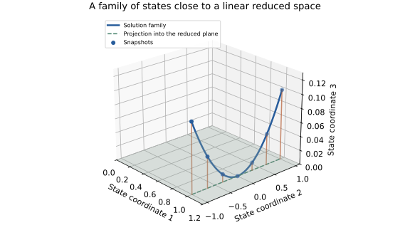
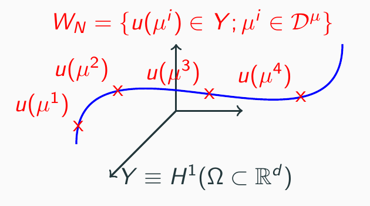
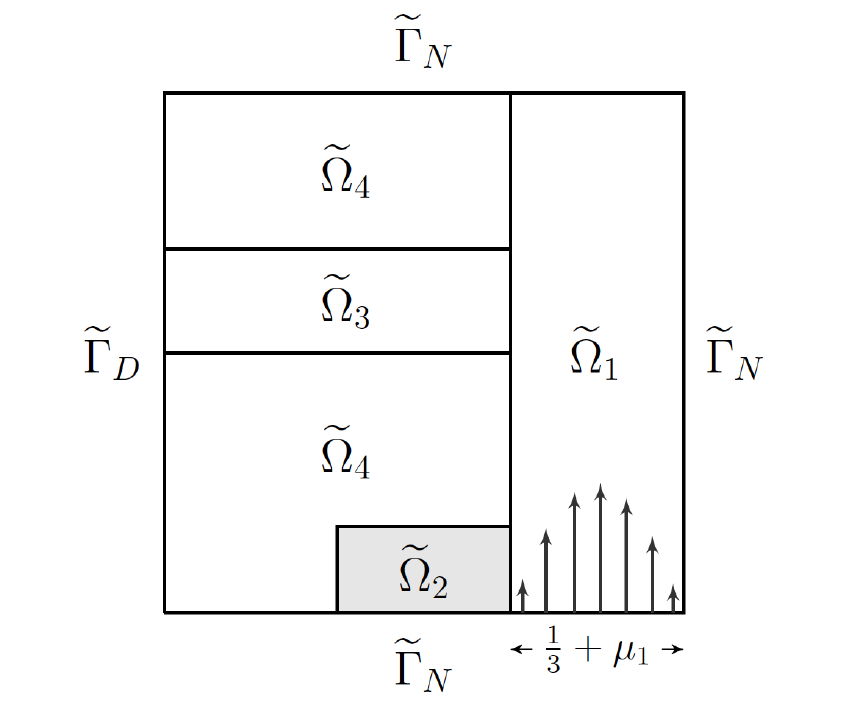

.pdf
.pdf
Reduced bases and Galerkin prediction
How can repeated predictions become cheaper while retaining the structure of the governing equations? We first assume a linear, coercive problem and a fixed reduced trial space. See notation for state vectors, norms and observations.
Course route: understand the solution family, snapshot construction, Galerkin equations, stability and affine prediction. The compliant-output result explains an important special case in the error analysis. Supplementary remarks extend the interpretation without adding a new required practical.
Why a reduced basis can represent a large model
The input is a parameter vector: material coefficients, boundary data, forcing amplitudes or geometry can vary. The desired result may be a temperature average, a displacement or a sensor prediction, rather than every degree of freedom. For the discrete model, the relevant family of states is
This solution manifold is a subset of the large state space. Here “manifold” describes the parameterized solution family; it does not assume that it is a smooth embedded manifold everywhere. A fine mesh is needed to represent each state accurately, but this does not mean that every state-space direction is visited as the parameters vary. If that family lies close to a small linear subspace, one basis can represent many predictions.

The illustration uses the family \(u(t)=(1,t,0.1t^2)^T\) and the plane spanned by the first two coordinate vectors. For \(|t|\leq1\), dropping the third component makes at most 0.1 Euclidean error. The important question is distance to a useful linear approximation space, not just the number of parameters. A translated narrow pulse can visit many almost orthogonal grid directions even with one parameter; a small global linear basis can then perform poorly.
The original illustration below emphasizes the sampling step: red crosses are full solutions at selected parameters, while the blue curve represents the wider family. A finite collection of points is not yet a vector space; the RB space is their linear span. The slide labels that collection \(W_N\); we use \(\Xi_{\mathrm{snap}}\) for the parameter sample and \(V_r\) for the resulting linear approximation space.

Two applications justify expensive preparation:
-
Many queries: parameter studies, optimization, uncertainty propagation or repeated inverse-problem evaluations reuse the same reduced model.
-
Real-time prediction: a sensor or controller supplies a new query with a response deadline; the offline preparation has already been completed.
A reduced basis method combines a choice of approximation space, projected prediction equations, an error assessment and a strategy for reusing parameter-independent computations. POD and greedy are different ways to choose the space; they are not replacements for solving the reduced prediction equations.
Full-order problem and reduced space
For each \(\mu\in\mathcal P\), seek \(u_h(\mu)\in V_h\) such that
Let \(n=\dim(V_h)\). In coordinates this is \(A(\mu)\mathbf u=\mathbf f(\mu)\). Assume continuity and coercivity in a fixed norm:
For a bounded load functional, coercivity ensures that the discrete problem has a unique solution. It also controls sensitivity: testing with the solution and using the dual norm gives \(\|u_h\|_V\leq\|f_\mu\|_{V_h'}/\alpha(\mu)\). The Riesz notes explain this dual norm. A small stability constant allows a small perturbation of the load to have a large effect on the state.
Sampling the parameter domain before constructing Z
The reduced basis does not exist before choosing which full-order states to compute. Distinguish the physical domain \(\Omega\) (where the PDE is solved) from the parameter domain \(\mathcal P\subset\mathbb R^p\) (where training queries are selected). Sampling parameters chooses columns of the snapshot matrix; it does not select spatial nodes or sensors.
The construction follows this chain:
Every column of \(S\) requires a full-order solve. If the snapshots are linearly independent and all are retained, we may take \(Z=S\) with \(r=m\): Galerkin does not require an orthonormal basis. We distinguish the raw snapshot matrix \(S\) from the basis used for prediction \(Z\) because orthonormalization changes its coordinates and POD truncation may reduce its span. Orthonormalization or POD then turns those columns into the basis matrix. Here \(p\) is the parameter dimension, \(m\) the number of snapshots, \(n\) the full state dimension, and \(r\) the retained rank; these numbers have different meanings.
Equidistributed, logarithmic and random samples
For one parameter in \([\mu_{\min},\mu_{\max}\)], a uniform grid with \(m\geq2\) uses
It resolves equal absolute increments. For a strictly positive parameter spanning several orders of magnitude, sample uniformly in its logarithm instead:
Successive points now have a constant ratio. Over \([0.1,10\)], five log-spaced values are approximately 0.1, 0.316, 1, 3.162 and 10; five linearly spaced values are 0.1, 2.575, 5.05, 7.525 and 10. These designs spend very different amounts of sampling effort near small diffusivities. A logarithmic coordinate is undefined at zero and for negative values; it is appropriate only when the physical parameter range and relevant scales justify it.
For uniform random sampling, replace the fraction in the linear formula by an independent draw \(\xi\sim\mathcal U(0,1)\). For the log-random sampling in the slides, make that replacement in the logarithmic formula. The latter has density proportional to \(1/\mu\), so it is not uniform sampling in the physical parameter. Record the seed for reproducibility. Random draws do not guarantee that boundaries, rare regimes or sharp transitions are represented; add deliberate coverage checks.
For a box in \(p\) dimensions, a tensor grid with \(k\) values per coordinate contains \(k^p\) points. Ten values per coordinate require 100 snapshots in two dimensions, but one million in six dimensions: this is the curse of dimensionality. Random sampling avoids a fixed tensor product count, but achieving useful coverage can still be difficult in high dimension. Reject nonphysical combinations when the admissible domain is not a box. Stratification or Latin hypercube sampling can spread a fixed budget across coordinate ranges; this does not by itself bound the ROM error.
Candidate set, selected snapshots and held-out checks
| Set | Role |
|---|---|
\(\Xi_{\mathrm{train}}\) |
Candidate parameters on which greedy scans the current estimator, or parameters used to design the approximation. |
\(\Xi_{\mathrm{snap}}\) |
Parameters at which full-order snapshots have actually been computed. For greedy this is usually a small subset of the candidate set. |
Validation set |
Separate queries used to compare ranks or sampling designs before fixing the model. |
Test set |
Untouched queries used to report final performance after those choices are fixed. |
For a prescribed POD experiment, solve at all selected snapshot parameters first, then compress their span. For greedy, begin with one snapshot, evaluate the current reduced model and its estimator on the candidate set, and compute the next full snapshot only at a selected maximizer. This is adaptive snapshot selection within a specified candidate set; it cannot discover a regime absent from that set. The greedy chapter supplies the algorithm and its finite-training-set guarantee.
Our opening practical uses twelve logarithmically spaced training values on \([0.1,10\)] and geometric midpoints between them for held-out checks. Those midpoints are disjoint from training but do not certify the entire interval. If used repeatedly to choose the rank, they are validation data; a final test should use fresh points. POD weights must agree with the quantity being averaged: equal weights on a log grid emphasize logarithmic parameter increments, not equal physical intervals. See continuous POD and quadrature for the precise connection.
import numpy as np
lo, hi, m = 0.1, 10.0, 12
mu_train = np.geomspace(lo, hi, m)
mu_validation = np.sqrt(mu_train[:-1] * mu_train[1:])
rng = np.random.default_rng(20260917)
mu_test = np.exp(rng.uniform(np.log(lo), np.log(hi), 100))
# Each training parameter is passed to the full solver to form one column of S.
# Keep mu_test unused until the sampling design and retained rank are fixed.Lagrangian spaces and hierarchical enrichment
In the slides, Lagrangian RB means a space spanned by solution snapshots at selected parameters:
The name does not mean that reduced coefficients are polynomial Lagrange interpolation weights in parameter space; Galerkin will determine those coefficients from the PDE. If independent snapshots are appended while keeping the previous ones, the selected sets and spaces are nested:
This is a hierarchical construction. A fresh uniform grid for each requested size need not retain the previous sample points, and its spaces need not be nested. POD modes from one fixed dataset also define nested spaces as the retained rank grows, once an ordering of modes is fixed. Recomputing POD after changing the dataset can rotate all the modes; nesting then needs to be checked rather than assumed.
From snapshots to a reduced basis
Choose parameters \(\mu_1,\ldots,\mu_m\) and solve the full model there. The resulting snapshots give a candidate space
What exactly is the matrix Z?
Fix the full-order basis \(\{\phi_k\}_{k=1}^n\) (for example the finite-element shape functions). A reduced basis function is a function in that same full-order space, so it can be expanded as
The \(j\)-th column \(\mathbf z_j\) of \(Z\) contains the \(n\) coefficients of this one reduced basis function:
The columns are linearly independent; their span in coefficient space represents \(V_r\). The matrix is usually tall, not square, and has no ordinary inverse. A snapshot basis uses independent snapshot coefficient vectors, usually after orthonormalization; a POD basis uses selected linear combinations of them.
Now expand a reduced state first in its reduced basis, then in the full basis:
Hence \(\mathbf u_r=Z\mathbf a\): the vector \(\mathbf a\in\mathbb R^r\) contains reduced coordinates, while \(\mathbf u_r\in\mathbb R^n\) contains full-order coordinates of the reduced approximation. Multiplication by \(Z\) reconstructs a vector already in the reduced space; by itself it is not a projection from the full space. For example,
This space contains precisely the vectors whose second and third coordinates are equal. It has two free coefficients, even though its reconstructed vectors have three entries.
Normalize the selected directions
The snapshots need not be independent: \(r\) can be smaller than \(m\). Retaining independent snapshot directions without compression gives the classical snapshot RB space. POD instead selects combinations that minimize an average projection error at a prescribed rank; greedy selects new snapshot parameters adaptively using an estimator. All three constructions must specify the state metric used for normalization. In the full basis this metric is the Gram matrix \(G_{kl}=(\phi_k,\phi_l)_V\); consequently \((\zeta_i,\zeta_j)_V=(Z^TGZ)_{ij}\).
For a basis already orthonormal in \(G\), add a snapshot \(s\) by removing its projection:
If \(\nu\) is below a declared relative/absolute dependence threshold, the snapshot adds no numerically reliable direction and must not be normalized. In floating-point arithmetic, repeat the projection subtraction before normalization (reorthogonalization). The result is \(Z^TGZ=I_r\). This normalization changes coordinates, not the selected span. Raw, nearly parallel snapshots can produce a badly conditioned reduced system even when the PDE itself is well conditioned.
Algorithm — Turn sampled states into Z
After sampling and full solves, use the following metric Gram–Schmidt construction for a Lagrangian basis. A dependence threshold is applied relative to each original snapshot norm; an additional absolute floor handles nearly zero states.
\begin{algorithm}
\caption{Metric orthonormalization of sampled states}
\begin{algorithmic}
\INPUT Snapshots $S=[s_1,\ldots,s_m]$; positive definite metric $G$; thresholds $\tau_{\mathrm{rel}},\tau_{\mathrm{abs}}$
\STATE $Z\leftarrow[\,]$
\FOR{$j=1$ \TO $m$}
\STATE $v\leftarrow s_j$; $\nu_0\leftarrow\sqrt{s_j^TGs_j}$
\FOR{$k=1$ \TO $2$}
\STATE $v\leftarrow v-Z(Z^TGv)$
\ENDFOR
\STATE $\nu\leftarrow\sqrt{v^TGv}$
\IF{$\nu>\max(\tau_{\mathrm{abs}},\tau_{\mathrm{rel}}\nu_0)$}
\STATE Append $v/\nu$ as a column of $Z$
\ENDIF
\ENDFOR
\OUTPUT Basis matrix $Z$ and retained dimension $r$
\end{algorithmic}
\end{algorithm}
In exact arithmetic, retaining every independent direction preserves the span of the snapshots. Discarding directions at a nonzero numerical threshold is an approximation; record that threshold and check orthogonality and reconstruction defects. This procedure does not choose a rank by average approximation quality. That is the role of the POD truncation criterion.
Supplementary reading — Taylor and Hermite spaces
The slides also distinguish two derivative-based alternatives. At one reference parameter \(\mu_0\), a Taylor space retains the state and selected sensitivity derivatives:
A multi-index \(\sigma=(\sigma_1,\ldots,\sigma_p)\) records how many derivatives are taken in each parameter; the number of candidate derivatives through order \(q\) is \(\binom{p+q}{q}\), before removing dependencies. For one parameter, differentiating the full system gives a sensitivity equation:
The same factored full operator can serve additional sensitivity right-hand sides. A Hermite space is the span of states and selected derivatives at several parameter points; the union of these generating vectors must be followed by taking their span. Taylor approximation is local and requires parameter regularity. The required course constructions use Lagrangian snapshots and POD; sensitivity-based spaces are retained here as reference material.
Determine the coefficients at a new parameter
Write the approximation as a linear combination of basis functions, and test the original equation with each basis function:
Our convention puts the trial function in the first argument of the bilinear form. Thus row \(i\) is a test equation and column \(j\) multiplies a trial coefficient. In the full-order basis, \(A_{ij}=a_\mu(\phi_j,\phi_i)\) and \(\mathbf u_r=Z\mathbf a\), giving
How the Galerkin projection operates
There are three distinct algebraic operations:
-
Reconstruct a trial state: \(\mathbf a\mapsto Z\mathbf a\). This restricts the unknown state to the selected span.
-
Apply the full equation: \(\boldsymbol\rho=\mathbf f-AZ\mathbf a\). This vector contains the residual functional evaluated on each full-order basis function.
-
Test on the reduced space: require that the residual vanish on every reduced test function \(v_r=\sum_j b_j\zeta_j\). Its full coordinates are \(Z\mathbf b\), so
This holds for every test coefficient vector exactly when
Multiplication on the right by \(Z\) chooses trial directions; multiplication on the left by \(Z^T\) combines full test equations into the reduced test equations. The entry \((Z^TAZ)_{ij}=\mathbf z_i^TA\mathbf z_j=a_\mu(\zeta_j,\zeta_i)\) couples one trial direction to one test direction. This explains both the ordering and the dimensions:
There is no extra factor \(G\) in this testing equation: \(\rho\) contains functional coefficients, not state coefficients. If a Riesz representative \(z_R\) is used instead, \(Gz_R=\rho\) and the equivalent condition is \(Z^TGz_R=0\). This is why Galerkin testing and metric projection use different-looking transposes.
Projecting a known state is a different calculation
If a full state \(\mathbf u\) is already available, its closest point in the reduced space in the metric \(G\) solves
Differentiating gives the normal equations and the full-space projector:
For \(Z^TGZ=I_r\), extraction of projection coefficients is \(\mathbf a=Z^TG\mathbf u\); reconstruction is still \(Z\mathbf a\). Only when \(G=I\) and the columns are Euclidean-orthonormal does coefficient extraction reduce to \(Z^T\mathbf u\). The projector \(P_G\) is an \(n\times n\) map with \(P_G^2=P_G\); the rectangular matrix \(Z\) is not that projector.
For the example above, take \(G=I_3\) and \(\mathbf u=(1,2,0)^T\). The matrix \(Z^TZ=\operatorname{diag}(1,2)\) gives projection coefficients \((1,1)^T\) and projected state \((1,1,1)^T\). Using \(Z^T\mathbf u=(1,2)^T\) as coefficients would incorrectly produce \((1,2,2)^T\).
For a symmetric positive definite PDE matrix, Galerkin corresponds to the energy projector
This identity follows by substituting \(A\mathbf u_h=\mathbf f\) into the reduced system. It explains energy orthogonality, but is not how an online prediction is computed: the reduced solve uses \(\mathbf f_r\) and does not need the unknown full state. For nonsymmetric coercive problems the same algebraic map is a projector, but it is generally not an orthogonal projector in an energy inner product.
Evaluate the output
For a linear output, apply the output functional to the same expansion:
We do not know the full solution at a new parameter, so its projection coefficients are not available. Galerkin determines coefficients by requiring the equations to hold on every reduced test direction. It is not parameter interpolation, and its coefficients need not be the weights used to construct the snapshots.
The coercivity inequality holds on every subspace of \(V_h\), so the reduced problem has a unique solution when the basis columns are independent. If \(u_h(\mu_i)\in V_r\), then the full solution at that parameter already satisfies all reduced equations and must equal the reduced solution. POD truncation may discard part of a snapshot; exact reproduction then no longer follows.
An invertible change of reduced coordinates \(\widehat Z=ZT\) replaces the matrix by \(T^TA_rT\) and the coefficients by \(T^{-1}\mathbf a\). The reconstructed state is unchanged. For nested spaces, adding a basis direction cannot increase the best-approximation error. In the symmetric case below it therefore cannot increase Galerkin energy error either. That monotonicity does not automatically hold for every output or a different state norm.
What Galerkin guarantees
Subtracting the full and reduced equations yields Galerkin orthogonality:
If \(a_\mu\) is symmetric, it defines the energy norm \(\|v\|_{a_\mu}=\sqrt{a_\mu(v,v)}\). Then
In the fixed norm, this implies
Write
The cross term in its squared energy norm vanishes by Galerkin orthogonality. Thus
Taking the minimum proves energy optimality; coercivity and continuity give the fixed-norm estimate.
For a general continuous coercive bilinear form, Céa’s estimate uses \(\gamma/\alpha\); symmetry is needed for the energy argument above. Galerkin is generally not the orthogonal projection in an arbitrarily chosen POD metric.
Why orthonormalization matters for conditioning
Assume symmetry, coercivity and continuity in the fixed metric \(G\), and \(Z^TGZ=I_r\). For a coefficient vector \(c\), the corresponding state has norm \(\|Zc\|_G=\|c\|_2\). Therefore
The minimum and maximum of this Rayleigh quotient bound the reduced eigenvalues, so
With a nonorthonormal basis, let \(M_r=Z^TGZ\). The same inequalities hold with \(c^TM_rc\) in place of \(\|c\|_2^2\). They bound the generalized eigenproblem \(A_rc=\lambda M_rc\), whereas the ordinary condition number may be as large as the bound \((\gamma/\alpha)\kappa_2(M_r)\). This is a coordinate problem that orthonormalization removes; it does not improve the approximation space itself.
For example, take \(A=G=I_2\) and the two raw columns \((1,0)^T\) and \((1,\varepsilon)^T\). For nonzero \(\varepsilon\) they span the whole state space, but
Orthonormalizing the same columns gives the identity reduced matrix, with condition number one. The general coercive nonsymmetric case requires singular-value reasoning instead of the symmetric Rayleigh-quotient argument used here.
A stronger result for a compliant output
The output is called compliant when it is the load functional itself:
For example, the displacement work of an applied mechanical load is a compliant output. An unrelated sensor or average generally is not; this special assumption must be stated before using the following result.
For a symmetric coercive problem and conforming Galerkin reduction,
Consequently, with \(d_r=\inf_{v_r\in V_r}\|u_h-v_r\|_V\),
The last bound assumes a verified positive stability lower bound in the same fixed norm.
Let \(e=u_h-u_r\). Use the full equation, symmetry and Galerkin orthogonality:
Energy optimality gives the minimum; continuity bounds each candidate squared energy error by its squared fixed-norm error times \(\gamma\). For the residual bound, use \(a_\mu(e,e)=R_\mu(e)\), the dual-norm inequality and \(\|e\|_V\leq\|R_\mu\|_{V_h'}/\alpha_{\mathrm{LB}}\).
A smaller energy error produces a quadratically smaller compliant-output error. In nested spaces, the outputs increase toward the full-order output because the nonnegative squared energy error decreases. For a general output, only the usual absolute dual-norm bound applies; neither the sign nor this quadratic identity is guaranteed.
For the three-dimensional worked example below at \(\mu=1\), use the compliant output \(f^Tu\) instead of the mean. Then \(s_h=13/7\), \(s_r=20/11\), and both the output error and squared energy error are \(3/77\). The mean is one third of this load output, so its error is correspondingly scaled; it is not equal to the squared energy error itself.
Affine decomposition: making repeated predictions cheap
Core course material. The offline/online principle for prediction is required. The additional factorization of error estimators is optional advanced reading.
A small system is not enough: computing Z.T @ A(mu) @ Z from a newly assembled full matrix at every query still touches the full dimension.
We need to separate what changes with the parameter from what can be stored once.
An affine decomposition in reduced modeling means a finite sum of fixed spatial operators multiplied by scalar parameter functions.
Those scalar functions need not be affine or even linear in the parameter: exp(mu) or mu**2 can be coefficients.
Suppose
For example, a diffusion coefficient of the form
leads, by linearity of the integral, to
Thus each finite-element matrix \(A_q\) can be assembled independently of the next parameter query. Reaction and boundary terms can contribute additional fixed operators. Projecting the sum gives the crucial identity
Projection of the full operators is paid once for a fixed basis; only a small linear combination is repeated.
-
Offline: compute snapshots, construct \(Z\), and store \(Z^TA_qZ\) and \(Z^T\mathbf f_q\). This work depends on \(n\).
-
Online: evaluate coefficient functions, combine the small matrices/vectors, and solve the \(r\times r\) system.
For dense reduced algebra, matrix assembly costs \(O(Q_A r^2)\), and a direct solve typically costs \(O(r^3)\). These estimates assume fixed modest \(Q_A,Q_f\) and cheap coefficient evaluation. For an output \(s=\mathbf l^T\mathbf u\), precompute \(\mathbf l_r=Z^T\mathbf l\) and evaluate \(s_r=\mathbf l_r^T\mathbf a\) in \(O(r)\). Reconstructing all \(n\) state entries costs \(O(nr)\) and belongs in a timing comparison only when that output is needed.
Non-affine coefficients or nonlinear operators can reintroduce full-order cost. EIM and DEIM will address that later in the course.
Worked prediction: two fixed matrices, many parameters
Consider the following small algebraic example (the grid-scaled PDE model is given below):
Take the output to be the mean of the three state entries. The offline arrays are
At the new parameter \(\mu=1\), the entire online prediction is
At another parameter only the scalar multiplying \(K_r\) changes. The stored arrays and their dimensions stay the same. This deliberately small basis is not exact: the full mean at \(\mu=1\) is \(13/21\). Efficiency and accuracy are separate questions; POD/greedy improve the space and a residual bound assesses its error.
import numpy as np
# Offline: arrays with full dimension are used here.
K = np.array([[2., -1., 0.], [-1., 2., -1.], [0., -1., 2.]])
Z = np.array([[1., 0.], [0., 1.], [0., 1.]])
f = np.ones(3)
ell = np.ones(3) / 3
Kr, Mr = Z.T @ K @ Z, Z.T @ Z
fr, ellr = Z.T @ f, Z.T @ ell
# Online: only reduced arrays enter the function.
def predict(mu, Kr, Mr, fr, ellr):
a = np.linalg.solve(mu * Kr + Mr, fr)
return ellr @ a
print(predict(1., Kr, Mr, fr, ellr)) # 0.60606060... = 20/33| Step | Arrays touched | When? |
|---|---|---|
Assemble operators and solve snapshots |
Full-order matrices and vectors |
Offline |
Project each fixed operator/load/output |
Full arrays and \(Z\) |
Offline, again if the basis changes |
Combine reduced terms |
\(r\times r\) matrices, \(r\)-vectors |
Every parameter query |
Solve and evaluate a scalar output |
Reduced system, reduced output vector |
Every parameter query |
Reconstruct a full field for plotting |
\(Z\) and the coefficients |
Only when the field is requested |
To see the principle in your practical, increase the full grid size while keeping the reduced rank fixed: the offline arrays grow, but the arrays passed to predict do not.
For \(n=10^5\), \(r=20\) and two affine terms, an online assembly combines two \(20\times20\) matrices.
This is an operation-count illustration, not a measured speedup; training costs must be amortized over enough queries.
Algorithm — Affine RB/Galerkin prediction
The methodology above separates basis construction, projection and parameter queries. The following two algorithms assume that POD or greedy has already supplied an independent basis. The algorithms use a fixed output vector. For an affine parameter-dependent output,
Store each reduced output vector offline and combine those \(r\)-vectors online, just as for the load. In the compliant case, the reduced output vector is the assembled reduced load.
\begin{algorithm}
\caption{Offline projection for an affine reduced model}
\begin{algorithmic}
\INPUT Basis $Z\in\mathbb R^{n\times r}$; operators $A_q$; loads $f_q$; output vector $\ell$
\REQUIRE $Z$ has full column rank
\FOR{$q=1$ \TO $Q_A$}
\STATE $A_{r,q}\leftarrow Z^T A_q Z$
\ENDFOR
\FOR{$q=1$ \TO $Q_f$}
\STATE $f_{r,q}\leftarrow Z^T f_q$
\ENDFOR
\STATE $\ell_r\leftarrow Z^T\ell$
\OUTPUT Reduced operators, loads and output vector
\end{algorithmic}
\end{algorithm}
\begin{algorithm}
\caption{Online parameter query}
\begin{algorithmic}
\INPUT Parameter $\mu$ and the precomputed reduced arrays
\STATE $A_r\leftarrow\sum_{q=1}^{Q_A}\theta_q(\mu)A_{r,q}$
\STATE $f_r\leftarrow\sum_{q=1}^{Q_f}\eta_q(\mu)f_{r,q}$
\STATE Solve $A_r a=f_r$
\STATE $s_r\leftarrow\ell_r^T a$
\OUTPUT Reduced coefficients $a$ and scalar prediction $s_r$
\end{algorithmic}
\end{algorithm}
The online query forms no full-dimensional vector. Only reconstruct \(Za\) when a full field is requested. The core estimation notes explain how to assess this prediction using a residual and a Riesz solve. Removing full-dimensional work from the certificate itself is a separate advanced extension.
Running model: reaction–diffusion
The opening experiment discretizes \(-\mu u''+u=1\) on \((0,1)\) with zero Dirichlet values. At \(n\) interior points, \(h=1/(n+1)\) and
For \(\mu>0\), \(A\) is symmetric positive definite. The reduced matrices are \(K_r=Z^TKZ\) and \(M_r=Z^TZ\), with \(A_r=\mu K_r+M_r\). Do not replace \(M_r\) by \(I\) unless the basis is Euclidean-orthonormal. In the practical, \(Z^T(hI)Z=I\), so \(M_r=I/h\).
A sensor output can similarly be reduced to \(HZ\mathbf a\). Reduction accelerates prediction; matching observations or updating a state requires an assimilation step, which this model does not yet perform.
Supplementary reading — Snapshots on changing geometries
The second part of the approximation slides asks an essential question: how can snapshots be added if they are defined on different physical domains? A column of \(Z\) must use the same coordinate interpretation as every other column. Concatenating unrelated nodal vectors from different meshes does not establish that correspondence, even if their lengths happen to match.
Introduce a fixed reference domain \(\Omega\) and an invertible mapping \(T_\mu:\Omega\to\widetilde\Omega(\mu)\). For a physical solution \(\widetilde u_\mu\), its reference-domain representation is the pullback
Form the snapshots from these functions in a common reference basis. For a piecewise affine map, partition the reference domain into fixed subregions; each map has the form \(T_\mu(x)=c_k(\mu)+J_k(\mu)x\) on a subregion. Require invertibility, compatibility across interfaces and suitable uniform regularity over the parameter range. A different reference map can change the approximation quality of a finite-dimensional RB space, not just the mesh error.
Transform the weak problem, not only the state vector
Writing \(J=DT_\mu\), the chain rule and change of variables give
Consequently a scalar diffusion form becomes
The inverse Jacobian is a matrix; its determinant is a scalar, and the two must not be confused. Mass and load integrals receive the determinant factor; advection and boundary integrals also require their appropriate transformations. For example, under \(T_\ell(x,y)=(\ell x,y)\) with \(\ell>0\) and unit diffusion,
Geometry has produced an exact two-term affine decomposition on the fixed reference domain, so the same offline projection principle applies. This does not mean an arbitrary geometric map always gives a short affine expansion.
The heat-transfer illustration from the PDF

In this example, the width of the right-hand subregion is \(1/3+\mu_1\), advection intensity depends on \(\mu_2\), and conductivity in subregion 3 depends on \(\mu_3\). For the reference choice \(\mu_1=0\), map the right-hand subregion by
The interface \(x_1=2/3\) stays fixed and the right edge \(x_1=1\) moves to \(1+\mu_1\); require \(1+3\mu_1>0\). The other subregions use the identity map. The diffusion terms in subregion 1 acquire coefficients \((1+3\mu_1)^{-1}\) and \(1+3\mu_1\) in the two coordinate directions. The advection profile in the PDF gives, after pullback, the fixed form \(\int_{\Omega_1}(1-x_1)(x_1-2/3)u_{x_2}v\) multiplied by \(162\mu_2\). The other conductivity forms have coefficients 100, \(\mu_3\) and 1. Thus six fixed spatial forms encode the three-parameter operator; each can be projected offline. This convection–diffusion example is generally nonsymmetric, so the symmetric energy and compliant-output identities above cannot simply be applied to it. The detailed physical model and vector transformation formulas remain available in PDF pages 24–51.
Supplementary bridge: inputs, outputs and time dependence
The extension overview develops general outputs, nonsymmetric operators and parabolic prediction, including the transient 2D thermal/POD route.
The steady model is the zero-time-derivative case of a larger input–state–output system:
For a fixed basis, substituting \(u_r=Za\) and testing gives
where \(M_r=Z^TMZ\), \(B_r=Z^TB\) and \(L_r=Z^TL\). An initial state can be projected in a declared metric; the time integrator then advances the reduced coefficients. Affine decomposition also applies to the mass, input and output operators when suitable expansions are available. The reduced forecast derivation develops this for the later assimilation sessions. Transient stability and time-dependent error bounds need additional analysis; the steady certificate does not certify an entire time trajectory by itself.
When does the offline investment pay off?
Let \(C_{\mathrm{off}}\) be preparation cost, \(C_h\) the cost of a full query, \(C_r\) that of the same reduced output query, and \(J\) the number of queries. If \(C_h>C_r\), total reduced-model cost is smaller when
For real-time use, the relevant additional constraint is whether each reduced query meets its deadline. For many-query use, report the amortized cost and the number of queries; a fast online solve alone does not establish a net saving.
Check your understanding
-
Why does multiplying the full system by \(Z^T\) still leave an approximation problem?
-
Which computations change when a new parameter arrives? Which change when the basis changes?
-
Would a small reduced-system residual certify the full-state error?
-
Prove exact reproduction at a retained snapshot. Explain what POD truncation changes.
-
Derive the conditioning bound for a metric-orthonormal basis.
-
Verify the compliant-output identity in the worked example, and explain why it changes when the output is the mean.
Continue with the Galerkin/POD practical.
Further reading
The reduced approximation slides (PDF) develop the solution family on pages 8–11, sampling and spaces on pages 12–14, orthonormalization and the basis matrix on pages 15–16, and Galerkin results on pages 17–22. These sections are developed above rather than left as prerequisites to be recovered from the slides. Their notation may differ; use the shared notation for the current course.